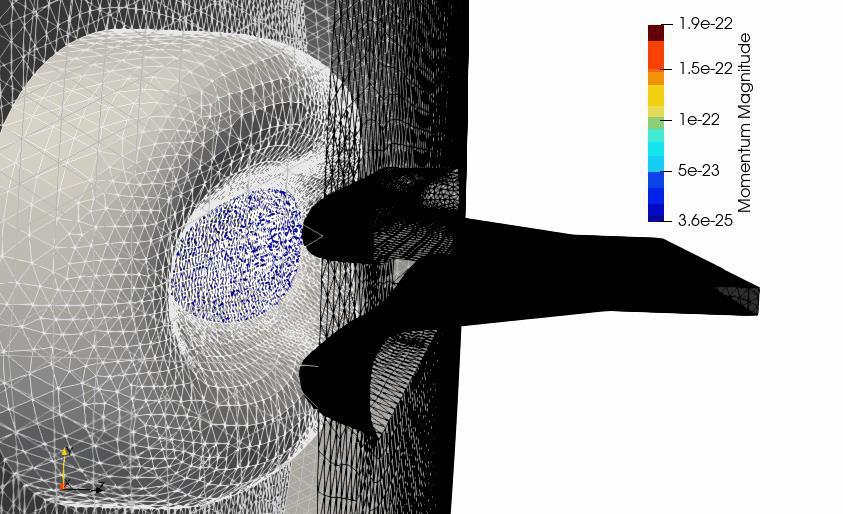

Gun3P¶
Gun3P is a static solver for DC electron guns. It computes the electrostatic potential from the electrode voltages, emits electrons from the cathode under the space-charge limit, tracks them, deposits their charge, and iterates until the fields and the beam are self-consistent. Optionally it also solves the magnetostatic field of the beam's own current. The outputs are the emitted current, the beam trajectories and envelope, emittances at a screen, and the fields on the mesh.
What it solves¶
flowchart TD
I["Initialize"] --> E["Electrostatic solve<br/>∇·(ε∇φ) = −ρ"]
E --> M["Magnetostatic solve<br/>∇×(μ⁻¹∇×A) = J<br/>(optional)"]
M --> T["Emit at cathode,<br/>track particles,<br/>deposit ρ and J"]
T --> C{"Converged?<br/>or max iterations"}
C -- no --> E
C -- yes --> P["Post-process:<br/>fields, trajectories,<br/>screen emittance"]The electrostatic field is \(\mathbf{E} = -\nabla\phi\) with Dirichlet conditions on metal surfaces (fixed voltage) and Neumann on symmetry planes. The optional magnetostatic field is \(\mathbf{B} = \nabla\times\mathbf{A}\) driven by the beam current. Particles obey \(d\mathbf{p}/dt = q(\mathbf{E} + \mathbf{v}\times\mathbf{B})\). The cathode emits according to the Child-Langmuir space-charge-limited law, with the current determined by the local field a short distance in front of the surface, so emission and field settle together.
Convergence is measured as the relative change in the field degrees of freedom between iterations, and the run stops when it drops below the tolerance or when MaxIterations is reached. Current and perveance per iteration are printed so you can see the approach to steady state.

Electron trajectories in a sheet beam klystron gun, colored by momentum, with the focusing electrode and anode.
Benchmark. Gun3P was compared with the commercial code MICHELLE on this gun: both give 129.3 A of emitted current with cathode current densities of 1.75 to 2.4 A/cm², from different mesh types.
Input file¶
Every block and key is described in the Gun3P command syntax.
A .gun3p file has up to four top-level blocks. It shares the ElectrostaticProblem and MagnetostaticProblem block types with TEM3P, and the Tracker block with Track3P; the syntax conventions of each carry over.
DCGunProblem: {
RunId: test
SymmetryFactor: 1 // 1 full, 2 half, 4 quarter
ElectricRelativeTolerance: 1.00e-12
ElectricRelativeTolerance2: 1.00e-12 // with magnetic solver active
MagneticRelativeTolerance: 1.00e-12
MaxIterations: 32
Save iteration data: On
}
ElectrostaticProblem: {
AnodeBoundaryId: 12
MeshFile: dcgun.ncdf
BasisOrder: 2
CurvedSurfaces: on
Charge averaging factor: 0.1 // under-relaxation of the deposited charge
VolumeMaterial: {
Id: 1
MediumName: Vacuum
PhysicalParameter: { Name: Permittivity ConstantValue: 1. }
}
Write dofs to disk: on
Use reduced solver: On
Outputs: { Dofs for vizualization: On }
Boundary: { Id: 1 ConditionType: Dirichlet DirichletValue: 0. } // cathode
Boundary: { Id: 2 ConditionType: Dirichlet DirichletValue: -500. } // focus electrode
Boundary: { Id: 12 ConditionType: Dirichlet DirichletValue: 115000. } // anode
Boundary: { Id: 3 ConditionType: Neumann NeumannValue: 0. } // open boundary
Boundary: { Id: 10 ConditionType: Neumann NeumannValue: 0. }
Boundary: { Id: 4 ConditionType: Dirichlet DirichletValue: 0. }
Compute non zero initial guess: On
LinearSolver: {
Solver: CG // or MUMPSFLOAT for small problems
Preconditioner: CHOLESKY
Tolerance: 1.00e-16
MaxIterations: 5000
}
}
MagnetostaticProblem: {
...same mesh, materials, and solver pattern; all boundaries Dirichlet 0...
}
Tracker: {
JobName: ./gun3p_results/OUTPUT
Particlefile: partpath
t: 6.0e-6 // forward tracking time, s
Generate output for vizualization: on
Print emission statistics: On
Backward: { t: 6.0e-6 Generate output for vizualization: on }
Domain: {
t0: 0.0
dt: 1.0e-12
MaxImpacts: 2
Emission Nx: 200 Emission Ny: 100 Emission Nz: 300
Tracking Nx: 200 Tracking Ny: 100 Tracking Nz: 300
Tracking box x min: -0.11 Tracking box x max: 0.11
Tracking box y min: -0.04 Tracking box y max: 0.04
Tracking box z min: -0.001 Tracking box z max: 0.18
}
Monitor: {
Type: PlaneCrossingsVsT
Name: screen
Plane point: 0., 0., 0.15999
Plane normal: 0., 0., 1.
Compute densities: On
Max x for densities: 0.110 X number of densities: 11
Max y for densities: 0.004 Y number of densities: 80
}
MeshInterface: { Type: pd Localizer: { Type: USS_Curve } }
Emitter: {
Type: 6 // Child-Langmuir
BoundaryID: 1 // cathode sideset
N: 1.0e+0 // electrons per macroparticle
M: 9.10938e-31 // kg
Q: -1.60218e-19 // C
d: 0.1e-3 // macroparticle radius, m
Sample Type: 1 // 1 face centers, 2 stochastic
Child Langmuir: {
Whole boundary is emitter: On
Use electric field direction for initial forward velocity: On
Max allowed total current: 1.35e+9
Reference z for emission surface: 1.50e-3
Particles per face: 5
...tuning parameters, keep the defaults...
}
}
Material: { BoundarySurfaceID: 1 Type: 2 } // 2 = Absorber
Material: { BoundarySurfaceID: 2 Type: 2 }
Material: { BoundarySurfaceID: 12 Type: 2 }
...
}
DCGunProblem¶
| Key | Meaning |
|---|---|
RunId |
Label for the run |
SymmetryFactor |
1, 2, or 4. Emitted current is scaled to the full gun. |
ElectricRelativeTolerance |
Convergence criterion on the electric field change between iterations, when the magnetic solver is off |
ElectricRelativeTolerance2, MagneticRelativeTolerance |
The same when the magnetic solver is on |
MaxIterations |
Stop here regardless. The example uses 32; convergence to 10⁻⁵ relative change takes about that many. |
FirstIterationForMagnetostaticProblem |
Iteration at which to start including the beam's self-magnetic field. Leave commented out to never run it. |
JustGenerateTreecotree |
Run on one core to precompute the tree-cotree gauge for the magnetostatic solve. Needed if the magnetostatic problem fails to converge. |
Save iteration data |
Keep per-iteration fields and particles under OUTPUT/ITER_<n>/ |
ElectrostaticProblem and MagnetostaticProblem¶
These follow the TEM3P conventions: MeshFile, BasisOrder, CurvedSurfaces, one Boundary block per sideset, VolumeMaterial by block. Differences:
| Key | Meaning |
|---|---|
AnodeBoundaryId |
Sideset of the anode. Used to reference the accelerating voltage for perveance. |
Charge averaging factor |
Under-relaxation: new charge = (1 − f) × previous + f × computed. 0.1 is stable; larger converges faster if it converges. |
VolumeMaterial.PhysicalParameter |
Name is Permittivity, Permeability, or Sigma, with ConstantValue |
Compute non zero initial guess |
Start each iteration's solve from the previous solution |
Use reduced solver |
Eliminate constrained DOFs before solving. Keep on. |
Outputs.Dofs for vizualization |
Write the field for gun3pOutputConverter to turn into a .mod file |
Outputs.ElectrostaticFieldToken, FileName, Nx, Ny, Nz |
Also export the field on a Cartesian grid, for use as an external field in Track3P |
LinearSolver.Solver |
CG with CHOLESKY for large problems, MUMPSFLOAT for small. Other keys as shown. |
In the magnetostatic problem every boundary is Dirichlet 0 and the material parameter is still named Permittivity in the examples, which the code accepts.
Tracker¶
| Key | Meaning |
|---|---|
JobName |
Output directory; must match the second argument on the command line |
t |
Forward tracking time in s. Make it long enough for the slowest particles to reach the screen. |
Backward |
Backward tracking from the emission reference plane to the cathode, used by the Child-Langmuir model to set the launch conditions |
Domain.dt |
Tracking time step |
Domain.Emission Nx/Ny/Nz, Tracking Nx/Ny/Nz |
Grid resolution for the particle localizer in the emission region and the tracking region |
Domain.Tracking box ... |
Bounding box of the tracking region, m. Particles outside are dropped. |
MeshInterface |
Localizer settings. Keep as in the example. |
Emitter¶
Type: 6 is Child-Langmuir, the model for thermionic DC guns. The other numbered types are shared with Track3P and are listed on its module page.
| Key | Meaning |
|---|---|
BoundaryID |
Cathode sideset |
N, M, Q |
Electrons per macroparticle, and the real particle mass and charge |
d |
Macroparticle radius for space-charge deposition |
Sample Type |
1 launches from face centers, 2 stochastically across each face |
Child Langmuir.Reference z for emission surface |
Distance in front of the cathode at which the field is sampled to set the emission current |
Child Langmuir.Particles per face |
Macroparticles launched per cathode face per iteration. Increase for smoother current; the reference says to experiment for convergence. |
Child Langmuir.Max allowed total current |
Safety cap in μA |
The remaining Child-Langmuir keys control the iteration strategy and are documented as "keep as default" in the command reference.
Monitor¶
Type |
Keys | Output |
|---|---|---|
PlaneCrossingsVsT |
Plane point, Plane normal, Compute densities, density grid extents and counts |
Emittances and current density of particles crossing one plane, printed per iteration |
PlanesCrossing |
First plane point, Common plane normal, Distance between first and last planes, Number of planes |
The same at a stack of parallel planes |
Material¶
Particle boundary behavior by sideset, numbered: 1 Reflector, 2 Absorber, 3 Secondary emitter, 4 Test surface, 5 SymmetryPlane. In a gun, every metal surface is an absorber.
Running¶
The second argument names the results directory and must agree with Tracker.JobName. The sheet beam gun with 459,000 elements and 32 iterations took 232 s on 256 ranks across two nodes. Each iteration is a full electrostatic solve plus tracking, so the cost scales with iteration count.
Output¶
| Location | Content |
|---|---|
gun3p_results/gun3p.log |
Timing summary. The detailed iteration log goes to standard output, so keep the Slurm output file. |
| Standard output | Per iteration: ||E dofs - prev|| ... rel. tol., emitted current and perveance from the Child-Langmuir model, and the screen monitor's emittances |
OUTPUT/previousPerveanceAtIter<n> |
Micro-perveance after each iteration, one number per file |
OUTPUT/emissionMap<n> |
Emission current per cathode face |
OUTPUT/ITER_<n>/E/, PARTICLES/ |
Per-iteration fields and trajectories when Save iteration data is on |
OUTPUT/E/, OUTPUT/M/ |
Final electrostatic and magnetostatic DOFs; staticDofs.ncdf.mod appears after the converter runs |
OUTPUT/PARTICLES/partpath_ts<n>.ncdf |
Particle positions per time step of the final iteration, for animation |
Post-processing¶
The fields are stored as DOF vectors. Convert them to ParaView .mod files with the companion program:
gun3pOutputConverter dcgun.gun3p e # electric field, final iteration
gun3pOutputConverter dcgun.gun3p m # magnetic field
gun3pOutputConverter dcgun.gun3p e 30 # electric field at iteration 30
Output goes to OUTPUT/E/staticDofs.ncdf.mod and OUTPUT/M/. If ElectrostaticFieldToken was on, the converter also writes the field on the Cartesian grid as a text file, which Track3P reads through Domain.ElectroStaticFieldMap. The Track3P module page describes that coupling.
In ParaView, load the mesh with the .mod file for the field and the partpath_ts*.ncdf series for the trajectories.
Tutorial¶
Sheet beam klystron gun: a 115 kV DC gun with a focus electrode, run to self-consistency and compared with MICHELLE.